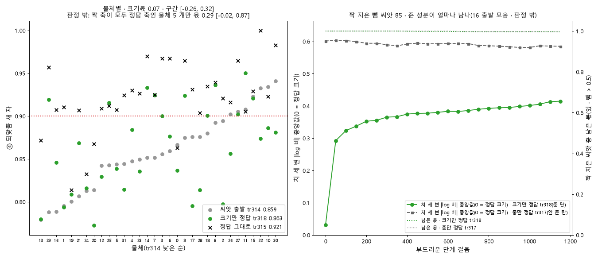

실험 m2_tr0318_h071_크기만
목표 G1.2 view 모음 → 파츠별 CAD code(CadQuery · 그 전 「3 면도 → 파츠별 CAD」 · 지금 M2 는 위 · 앞 · 옆 고정 세 장만 받음 → 아무 각도 N 장으로 바꿀 것 · 11-20) · G1 첫 제품 — 피규어 · 메카 사진 여러 장 + 치수 → 숨은선 3 면도 + 파츠별 CAD · G0 임의의 이미지 → CAD 코드 · 빌린 가정 5: 정사영 · 시점앎 · 흰바탕 · 렌더화풍 · 정답3D · 갚는 계획: 진단 · 정답 만들기 — 껍데기를 그릴 어휘가 정해지면 그 어휘로 CAD code 정답 변환(m2 학습 · 비교는 그 뒤 카드) · 목표 시험지 값: 안 잼 (!)
tr315 의 ④ 오름(0.8588 → 0.9214)은 주로 뺌 몸의 크기 덕인가 — 지금 씨앗의 크기만 정답으로 주면 그 오름의 몇 할을 되찾나?
| 가설 | 주장 | 결과 | 근거 |
|---|---|---|---|
| m2-H71 | tr315 오름은 주로 뺌 몸 크기 덕이다 — 지금 씨앗의 크기만 정답으로 주면 tr315 오름의 70 % 이상을 되찾는다 | 기각 | S6 합성 정답 32 · 뺌 씨앗 크기(치 세 변)만 정답 ④ 되맞춤 새 자 평균 0.8635(tr314 0.8588 · tr315 0.9214 · tr316 자리만 0.8648 · 자리몫 0.10 구간 [−0.18, 0.33] · tr317 종만 0.8555 · 종몫 −0.05 구간 [−0.29, 0.17]) · 크기몫 0.075(≤ 0.3 → 기각) · 크기몫 구간 [−0.2626, 0.3179](위끝이 0.3 을 조금 넘음) · 넷차 +0.0047 구간 [−0.0136, 0.0224] · 오름 16 · 내림 16 · 물체별 차 중앙값 −0.0006 · 범위 −0.0974 ~ +0.1309 · 0.9 넘은 물체 11/32(tr314 7 · 새로 넘음 3 · 7 · 8 · 9 · 14 · 18 · 25 · 29 · 떨어짐 10 · 22 · 26 · 30) · 가장 큰 오름 29 +0.1309 · 14 +0.0816 · 7 +0.0728 · 가장 큰 내림 2 −0.0974 · 17 −0.0806 · 28 −0.0623 · 최소 0.7726(물체 20) · tr315 보다 높은 물체 2(11 · 25) · 뺌 찾음 43/93(tr314 28 · tr316 34 · tr317 37 · tr315 74) · 남은 뺌 몸 평균 2.69(tr314 2.41 · tr315 2.5 · tr316 2.59 · tr317 2.16) · 하네스 실패 0 · CAD 안 끝남 0 · 조용한 실패 0 · 판 폴더 0.06 GB · 판정 밖 자취(짝 지은 씨앗 85 × 16 출발 · 부드러운 단계 50 걸음마다 · 그림317.py 인자 318 · 첫 기록 치 세 변이 정답 세 변 0.0102 안 assert): 치 세 변 대 정답 몸 틀 세 변 |log 비| 중앙값(85 × 3) 걸음 0 · 50 · 100 · 150 = 0.031 · 0.2925 · 0.3237 · 0.3372 · 마지막 기록(1,150) 0.4147(exp 0.4 ≈ 1.5 배 · 안 준 판 tr317 같은 짝 0.6013 → 0.5849) · 있 · 뺌 둘 다 0.5 넘은 몫 끝 0.996(두 판 같음) · 검토 뒤 더 잼(같은 자취 · scratchpad traj318.py · traj318b.py 를 내가 다시 돌려 확인): 짝 85 의 정답 종류 상자 8 · 둥근 몸 77(그중 계단축 11) · 둥근 몸 반지름(치[3]) 대 정답 반지름 |log 비| 중앙값 걸음 0 · 50 · 끝 0.0437 · 0.3559 · 0.3994 · 씨앗 축 = 정답 축 짝 38 대 다른 짝 47 세 변 |log 비| 중앙값 걸음 0 0.0288 · 0.0322 → 50 0.2579 · 0.323 → 끝 0.2675 · 0.5069 · 계단축 11 짝은 r2 · h1 을 씨앗 규칙 값(2r/3 · h/2)으로 받음(정답 아님) · 미리 적은 판정 밖 — 짝 85 중 씨앗 축 = 정답 축 38 · 짝 축이 모두 정답 축인 물체 5(1 · 19 · 24 · 25 · 27)만 크기몫 0.2867 구간 [−0.0201, 0.8737] · 차 +0.0159 — 넷.json 세 판 물체별 · 자취 json 에서 셈 |
결정 표(돌리기 전에 정함)
- 만약 지지
다음 크기이 주된 원인 — 입력에서 크기을 잡는 씨앗 고침 카드 - 만약 기각
다음 크기만으로는 아님 — 성분이 함께 맞아야 하는지(자리 + 꼴 · 몸 수) 다음 판 후보를 사용자와 고름 - 만약 약함
다음 섞임 — 숫자 그대로 적고 사용자와 고름
분석
한 줄로
물음: tr315 에서 뺌 몸을 정답 그대로 출발시키자 관문 ④ 가 0.8588 → 0.9214 로 올랐다. 그 오름은 주로 뺌 몸의 크기 덕인가?
답: 크기만 줘서는 오름의 대부분을 되찾지 못했다. 짝 지은 씨앗의 크기(몸의 세 변)만 정답으로 주고 나머지는 지금 씨앗 그대로 두자 평균은 0.8635 였다. tr315 오름 가운데 되찾은 몫(크기몫)은 0.07 이다. 미리 적은 규칙(≤ 0.3 이면 기각)대로 m2-H71 기각이고, 미리 적은 예측(기각)과 같다. 95 % 구간 [−0.26, 0.32] 의 위끝은 0.3 을 조금 넘지만 지지 선 0.7 과는 멀다. 판정 밖 자취(세 변 기준)로 보면, 준 크기는 맞춤 첫 50 걸음 만에 정답에서 크게 벗어났다. 그러니 이 판은 「크기를 주고 지킨 판」이 아니라 「크기를 주고 출발한 판」이다.
왜 이 실험을 했나
tr315 는 뺌 몸의 자리 · 크기 · 종류 · 축 · 몸 수를 한꺼번에 정답으로 줬다. 그래서 무엇 덕에 올랐는지 몰랐다. tr316 에서 자리만 줬더니 오름의 10 % 만 되찾았다. 그래서 꼴 쪽 성분을 하나씩 주는 판 둘을 사용자가 골랐다(감시 세션 전달). tr317 은 종류만 줬고 기각이었다(종몫 −0.05). 이 판은 크기만 준다. 목표는 임의의 메시를 CAD code 정답으로 바꾸는 변환이다.
몇 가지 낱말을 먼저 풀어 둔다.
- ④ 는 본 판 전에 거치는 관문이다. 뺌 어휘로 직접 만든 합성 정답 32 개(물체 번호 0 ~ 31)를 같은 맞춤으로 다시 맞춰(되맞춤) 정답을 되찾는지 본다.
- 뺌 몸 은 더한 몸에서 파내는 몸이다. 씨앗 은 입력에서 파인 곳을 찾아 뺌 몸을 처음 놓는 자리다.
- 종류 는 상자 · 원기둥 · 계단축 같은 몸의 꼴 이름이다. 축 은 몸이 선 방향이다. 몸 틀 은 몸이 선 방향을 높이로 둔 몸 자신의 좌표다. 몸의 세 변 은 몸 틀에서 잰 가로 · 세로 · 높이다(둥근 몸이면 지름 · 지름 · 높이).
- 맞춤은 물체마다 출발점 16 개(16 출발)에서 따로 돌린 뒤 가장 나은 것을 고른다. 앞 1,200 걸음은 부드러운 단계(종류와 켜짐을 부드럽게 맞춤), 뒤 150 걸음은 딱 단계(종류를 하나로 굳히고 크기 · 자리만 다듬음)다. 그 뒤 다듬기 단계가 더 있다.
- 몸마다 있(켜짐)과 뺌(빼는 몸으로 쓰임) 값이 0 ~ 1 로 있다. 둘 다 0.5 를 넘으면 그 몸이 켜진 뺌 몸이다.
- 판정 밖 은 미리 정한 판정에 쓰지 않은 곁 측정이다.
바꾼 것 하나
지금 씨앗 넷과 정답 뺌 몸 가운데를 거리로 짝지었다. 그다음 짝 지은 씨앗의 세 변만 정답 몸의 세 변으로 바꿔 출발시켰다. 정답 상자는 가로 · 세로 · 높이를, 둥근 몸은 지름 · 지름 · 높이를 넣었다. 반지름 같은 나머지 치수는 씨앗과 같은 규칙으로 그 세 변에서 다시 셈했다. 그래서 계단축 짝 11 개는 둘째 반지름과 단 높이를 정답이 아닌 씨앗 규칙 값으로 받았다. 크기의 일부만 준 셈이다.
가운데 · 축 · 종류 · 몸 수(넷)는 지금 씨앗 그대로다. 씨앗은 종류를 정하지 않는다(모든 종류 점수 0 · 섞인 상태로 출발). 정답 뺌 몸 93 개 중 85 개가 크기를 받았다. 짝 85 개의 정답 종류는 상자 8 개, 둥근 몸 77 개다.
세 변은 정답 몸의 높이 방향 그대로 씨앗의 축에 놓았다. 그래서 씨앗 축이 정답 축과 다른 짝 47 개는 물체 좌표에서 보면 돌아간 상자로 출발했다(같은 짝 38 개 · 결과 전에 셈). 나머지는 지금 쓰는 맞춤 코드(B2 · 출발을 일찍 버리지 않고 16 개를 끝까지 돌림)와 tr314 그대로다.
결과

왼쪽 그림을 먼저 보자. 가로축은 tr314 점수가 낮은 물체부터 늘어놓은 순서다. 초록(크기만 정답)이 회색(씨앗 출발) 위아래로 흩어져 있다. 대부분은 검은 ×(정답 그대로)까지 못 올라간다(물체 11 · 25 만 tr315 보다 높음). 물체별 차이는 −0.10 에서 +0.13 사이다.
오른쪽 그림은 짝 지은 씨앗 85 개를 16 출발에 걸쳐 모은 부드러운 단계 자취다(판정 밖). 초록 실선은 씨앗의 세 변이 정답 세 변에서 몇 배 벗어났는지를 log 비의 절댓값으로 잰 중앙값이다. 0 이면 정답 크기 그대로이고, 0.4 는 약 1.5 배다. 걸음 0 값이 0 이 아니라 0.031 인 것은 첫 걸음을 한 번 밟은 뒤에 적었기 때문이다. 회색 파선은 같은 짝을 종류만 준 tr317 에서 같은 셈으로 잰 것이다. 맨 위 점선 두 개(오른쪽 축)는 켜진 뺌 몸으로 남은 몫이며, 두 판 모두 1 근처다.
| 크기만(이 실험) | 씨앗 출발(tr314) | 자리만(tr316) | 종만(tr317) | 정답 그대로(tr315) | |
|---|---|---|---|---|---|
| 되맞춤 새 자 평균 | 0.8635 | 0.8588 | 0.8648 | 0.8555 | 0.9214 |
| 되찾은 몫 | 0.07 [−0.26, 0.32] | 0 | 0.10 [−0.18, 0.33] | −0.05 [−0.29, 0.17] | 1 |
| 0.9 넘은 물체 | 11/32 | 7/32 | 9/32 | 7/32 | 27/32 |
| 뺌 자리 찾음 | 43/93 | 28/93 | 34/93 | 37/93 | 74/93 |
| 끝에 남은 뺌 몸(물체 평균) | 2.69 | 2.41 | 2.59 | 2.16 | 2.5 |
| 하네스 실패 | 0 | 0 | 0 | 0 | 0 |
새 자는 정답 메시와 맞춘 메시의 표면 점이 서로 0.02 안에 드는 정도를 F 점수(0 ~ 1)로 잰 값이다. 거리는 정답 메시를 둘러싼 상자의 가장 긴 변을 1 로 둔 단위다. 되찾은 몫은 (이 판 − tr314) ÷ (tr315 − tr314) 다(지지 ≥ 0.7 · 기각 ≤ 0.3). 구간은 32 물체를 다시 뽑아 분자와 분모를 함께 셈한 짝 부트스트랩 2,000 번의 95 % 범위다. 뺌 자리 찾음은 끝에 정답 뺌 몸 가운데 0.1 안에 뺌 몸이 있는 수다.
왜 이렇게 나왔나
확인한 것
- 크기몫은 0.075, 95 % 구간은 [−0.2626, 0.3179] 다. 구간 위끝이 기각 선 0.3 을 조금 넘는다. 이 구간은 물체 사이 흔들림만 담는다(한 번만 돌림).
- tr314 대비 짝 차(같은 물체끼리 뺀 차의 평균)는 +0.0047, 구간은 [−0.0136, 0.0224] 다. 구간이 0 을 품는다. 오른 물체 16, 내린 물체 16, 물체별 차 중앙값 −0.0006 이다. 0.9 를 새로 넘은 물체가 여덟(3 · 7 · 8 · 9 · 14 · 18 · 25 · 29), 떨어진 물체가 넷(10 · 22 · 26 · 30)이다. 평균으로는 tr314 와 구분되지 않는다.
- 뺌 자리 찾음은 28 → 43/93 으로 세 성분 판 가운데 가장 많이 늘었지만 평균 점수는 거의 그대로다.
- 자취(짝 지은 씨앗 85 개 × 세 변 × 16 출발 · 50 걸음마다 · 부드러운 단계 1,150 걸음 기록까지): 세 변 |log 비| 중앙값은 걸음 0 · 50 · 100 · 150 에서 0.031 · 0.2925 · 0.3237 · 0.3372 이고 마지막 기록은 0.4147 이다. 같은 짝에 크기를 안 준 tr317 은 0.6013 → 0.5849 다. 준 크기는 첫 50 걸음에 대부분 벗어났고, 끝에도 안 준 판보다는 정답에 가깝다. 켜진 뺌 몸으로 남은 몫은 두 판 모두 마지막 기록에 0.996 이다.
- 둥근 몸 짝 77 개의 반지름도 같이 벗어났다. 정답 반지름 대비 |log 비| 중앙값이 걸음 0 · 50 · 끝에서 0.0437 · 0.3559 · 0.3994 다. 그러니 가로 · 세로만 헛돈 것이 아니라 실제 크기가 바뀌었다.
- 축으로 나눠 보면: 씨앗 축이 정답 축과 같은 짝 38 개도 50 걸음에 0.2579 로 벗어났다(다른 짝 47 개는 0.323). 첫 벗어남은 축 탓만이 아니다. 끝에는 같은 짝 0.2675, 다른 짝 0.5069 로 벌어진다. 뒤에 더 벌어진 것은 축이 다른 짝이다.
- tr317 과 견주면: 준 종류는 부드러운 단계 끝까지 90 % 남았지만, 준 크기는 첫 50 걸음 만에 벗어났다. 둘 다 점수는 오르지 않았다.
- 미리 적은 판정 밖 셈: 짝 지은 씨앗이 모두 정답 축과 같은 축인 물체 다섯 개(1 · 19 · 24 · 25 · 27)만의 몫은 0.29, 구간은 [−0.02, 0.87] 이다. 점 값은 전체(0.07)보다 높지만 다섯 개라 구간이 0 근처부터 0.87 까지 넓어 무엇도 말할 수 없다.
짐작 (아직 확인 안 함)
- 축이 같은 짝도 첫 50 걸음에 크기가 바뀌었다. 종류가 섞인 채이고 자리도 씨앗 그대로라, 정답 크기가 지금 자리에서 파인 곳에 맞지 않아 맞춤이 크기를 바꿨을 수 있다.
- 자리만(tr316) · 종류만(tr317) · 크기만(이 판) 모두 혼자서는 거의 오르지 않았다. tr315 오름은 여러 성분이 함께 맞아서 나왔을 수 있다. 다만 축만 · 몸 수만 준 판은 아직 돌리지 않았다. 그 둘 중 하나가 혼자서 오름을 낼 가능성도 남아 있다.
한계
- 정답에서 크기를 빌린 진단이다. 실제 물체에 그대로 쓸 수 없다.
- 섞임: 세 변은 정답 몸 틀 순서(높이 = 정답 축 방향)로 씨앗 축에 놓였다. 씨앗 축이 정답 축과 다른 짝 47/85 는 물체 좌표에서 돌아간 상자다. 둥근 몸 짝 77/85 는 세 변이 「지름 · 지름」 꼴이라, 가로 = 세로에서 둥근 몸이라는 종류 정보가 샌다. 계단축 11 짝은 크기 일부(둘째 반지름 · 단 높이)를 받지 못했다. 짝을 고르는 데 정답 가운데를 썼다. 정답 뺌 85/93 만 받았다. 몸 수는 tr314 와 같은 넷이고 tr315 와 다르다.
- 성분끼리 서로 기대면, 성분 판마다 낸 몫을 더해 tr315 오름을 나눌 수 없다(카드 섞임 칸).
- 한 번만 돌렸다. 대조 tr314 를 지금 코드로 다시 돌리지 않아, 같은 판을 다시 돌릴 때 생기는 흔들림 크기를 재지 않았다(카드 짐작 ≈ 0.1). 크기몫 구간 위끝(0.32)이 기각 선에 걸친다.
- 자취는 부드러운 단계만 담는다. 딱 단계와 그 뒤 다듬기는 없다.
- 자취의 「안 준 판」은 tr317 이다. 그 판은 크기 대신 종류를 줬으니 순수한 무개입 대조가 아니다. tr314 는 크기 자취를 남기지 않았다.
- 축 · 종류별로 나눈 자취와 반지름 자취는 맥락 없는 검토가 제안해 결과 뒤에 더 잰 것이다(미리 적지 않음).
- tr317 과 같은 시각에 GPU 를 하나씩 나눠 돌렸다. 묶음과 출발 씨는 같다. 끝 단계는 tr317 끝 단계가 끝난 뒤 돌렸다.
배운 것과 다음
지금 씨앗의 자리 · 종류 · 축 위에서 뺌 몸 크기만 정답으로 줘서는 ④ 오름의 대부분을 되찾지 못한다(몫 0.07 · 구간 위끝 0.32). 준 크기는 축이 같은 짝에서도 첫 50 걸음 만에 정답에서 벗어났다.
- 자리 · 종류 · 크기 셋 다 혼자서는 기각이다(몫 0.10 · −0.05 · 0.07). 축만 · 몸 수만은 아직 안 돌렸다.
- 다음 후보는 성분을 함께 주는 판(예: 자리 + 종류 + 크기 + 축, 또는 몸 수까지)이다. 크기가 왜 바로 밀리는지 보려면 「자리 · 축 · 크기를 함께 준 판」 도 후보다. 이것은 내 제안이고 고르는 것은 사용자다.
- 바탕은 지금 쓰는 맞춤 코드(B2) 그대로 둔다.
검토 (11-27 맥락 없는 서브 에이전트 · 카드 · 잼 · 넷 세 개 · tr316 · 317 잼 · 보고 · 결과_pc.png · 그림317.py · 판정316 · 318 · 껍데기313 만 봄)
- 숫자 · 판정: 평균 · 몫 0.0750 · 몫 구간 · 짝 차 구간 · 오름 내림 16/16 · 중앙값 · 범위 · 0.9 넘음 11 · 새로 넘음 · 떨어짐 번호 · tr315 보다 높음 11 · 25 · 축 맞은 5 물체 0.2867 · 자취 0.031 → 0.4147 · tr317 0.6013 → 0.5849 · 남은 몫 0.996 모두 다시 세어 맞음 · 규칙대로 기각.
- 답 · 배운 것 「거의 안 나왔다 · 오르지 않는다」 는 잰 것보다 셈 → 「대부분을 못 되찾음(0.07 · 위끝 0.32)」 · 답 속 자취는 판정 밖 표시.
- 짐작 1(축 탓)은 있는 자취로 갈림: 축 같은 짝 38 도 50 걸음 0.26(다른 짝 0.32) · 끝 0.27 대 0.51 → 확인한 것으로.
- 한계 「둥근 몸은 실제 꼴은 덜 바뀌었을 수」 는 잴 수 있음: 짝 85 중 둥근 몸 77 · 반지름도 0.044 → 0.356 → 0.399 → 확인한 것으로 · 「조금 샌다」 는 77/85 로.
- 바꾼 것 · 섞임에 빠짐: 계단축 11 짝은 r2 · h1 을 씨앗 규칙 값으로 받음.
- 짐작 2 대안: 축만 · 몸 수만 판은 안 돌림.
- 그림 설명: 걸음 0 이 0.031 인 까닭 · 왼쪽 가로축 순서 · 물체 번호 0 부터.
- 풀이 없는 낱말: R7 · R4 · R5 · B2 · 몸 틀 · 「세계에서」 · 짝 차.
- 사소: 카드 「tr318 과 동시」 → tr317 · 그림317.py 3 줄 주석이 코드(전체 값 중앙값)와 다름 · 예측(기각)과 맞았다는 줄.
고친 줄 (검토 반영)
- 한 줄로 답 · 굵은 문장: 「대부분을 되찾지 못했다」 · 예측과 같음 · 자취는 판정 밖(세 변 기준) 표시.
- 바꾼 것: 계단축 11 짝 크기 일부 · 짝 종류 상자 8 · 둥근 몸 77 · 「물체 좌표」 · B2 풀이 · 낱말 풀이에 몸 틀 · 물체 번호 · 다듬기 단계 이름 뺌.
- 결과: 왼쪽 가로축 순서 · 걸음 0 값 0.031 까닭 · 짝 차 풀이.
- 확인한 것에 더함(자취를 내가 다시 돌려 같은 값 확인 · 카드 근거에 넣음): 둥근 몸 반지름 0.0437 · 0.3559 · 0.3994 · 축 같은 짝 38 대 다른 짝 47 걸음 50 0.2579 · 0.323 · 끝 0.2675 · 0.5069 · 짐작 1 을 「축 탓만은 아님」 에 맞춰 고침 · 짐작 2 에 축만 · 몸 수만 안 돌림.
- 한계: 「조금 샌다」 → 77/85 · 계단축 11 · 둥근 몸 한계 줄은 확인한 것으로 옮겨 뺌 · 결과 뒤 더 잰 셈이라고 밝힘.
- 카드 같은 것 · 비용 칸 「tr318 과 동시」 → 「tr317 과 동시」(동시에 돈 판 이름 잘못 적음 · 판정 · 숫자와 무관) · 그림317.py 3 줄 주석.